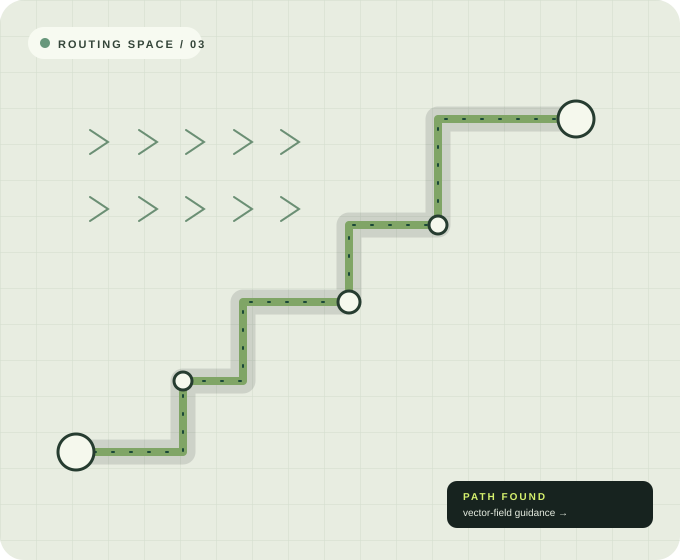

ELECTRICAL ENGINEER · RESEARCHER
Turning complex pathways into clear directions.
I’m Asrafuzzaman Khan Nahin. I build algorithms for intelligent design automation, from multilayer PCB routing to learning-guided decision making.

01 / AT A GLANCE
Engineering systems that find a better way through.
My MS research at King Fahd University of Petroleum and Minerals explored flow-field methods for PCB autorouting. I combine pathfinding, optimization, and machine learning to make routing more efficient, scalable, and adaptable.
More about my work02 / FEATURED WORK
Research in practice.
Flow-field based PCB autorouting
A 3D routing framework bringing together Dijkstra propagation, vector-field guidance, and learning-guided routing regions.
Explore projectHigh-efficiency grating coupler
Simulation-led optimization of a gold bottom reflector design, increasing modeled coupling efficiency to 89.5%.
Explore project03 / SELECTED PUBLICATIONS
Ideas made public.
Simulation-Based Design and Optimization of a Plasmonic Metamaterial Absorber for Long-Wave Infrared Microbolometers
Numerical analysis of an asymmetric hexagonal plasmonic refractive index sensor
WHAT’S NEXT
Curious about where these ideas can go?
I’m exploring PhD opportunities in intelligent design automation, planning, and adaptive autonomous systems.